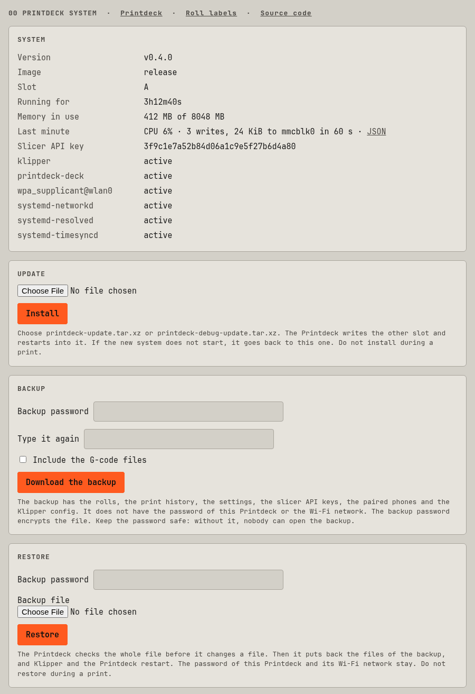

Software
Printdeck OS
A small, read-only Linux system for the Printdeck, with two system slots.
A small, read-only Linux system for the Printdeck Raspberry Pi 5. It has the Printdeck program, Wi-Fi, mDNS (printdeck.local) and NTP. It has no package manager, no shell and no SSH. Buildroot makes it from source.
The debug image is the same system with SSH, sudo, a shell and tools such as strace and tcpdump.
Install
- Download
printdeck.img.xzfrom the latest release. - Write it to an SD card or a USB SSD with Raspberry Pi Imager ("Use custom").
- Put the card in the Pi, and connect the power.
To write the image with dd:
xz -dc printdeck.img.xz | sudo dd of=/dev/sdX bs=4M conv=fsync status=progressA Pi 5 starts from USB when no SD card is in it. To set this, run sudo raspi-config on Raspberry Pi OS: Advanced Options > Boot Order.
The first start
- Tap your Wi-Fi network and type its password. For a hidden network, tap Hidden.
- Write down the address and the password of the deck, then tap Finish.
To see the address and the password again, open Machine > Wi-Fi and help.
To see the boot messages, hold a finger on the screen for one second during the start. Start the Pi again to go back.


Set up before the first start
Put the disk in a computer. Fill in printdeck.txt on the PRINTDECK partition:
| Setting | What it does |
|---|---|
wifi_ssid, wifi_password, wifi_country | The Wi-Fi network. The Pi clears the password in the file after it reads it. |
ssh_key | A public SSH key for the user printdeck (debug image only) |
printer.cfg (a file, next to printdeck.txt) | The Klipper configuration (see "Klipper") |
hostname, timezone | The name on the network (printdeck.local) and the time zone |
display_rotate, touch_invert_x, preheat_tool, ... | The settings of the touch screen (see "Settings") |
The login
The first start makes a password of four words, for example stamp-ocean-cider-brick. The password logs in to the web pages. In the debug image, it is also the password of the user printdeck for SSH and sudo. It is in /var/lib/printdeck/password.
The web pages
Open http://printdeck.local in a browser and log in with the password. The web server uses plain HTTP, so use it only on your own network.
/: the touch screen in the browser. Each browser has its own screens. On a phone, "Add to Home Screen" opens it as an app./system: the version, the services, the logs, the API key for slicers, the update, the backup, and the link to the source code.
Slicers
The Printdeck uses the OctoPrint API that slicers use to send files and start prints. The slicers see a printer named "Printdeck". The files go to /var/lib/klipper/gcodes.
- Cura (the OctoPrint Connection plugin): select the Printdeck in the list of OctoPrint printers, and click "Request". The touch screen asks "Allow Cura to use the Printdeck?". Tap Allow.
- OrcaSlicer, PrusaSlicer: add a physical printer of the type OctoPrint, with the address
http://printdeck.local. The API key is on the system page (/system).
The webcam of the API is the USB camera of the deck, or the deck screen when it has no camera:
/webcam/stream: an MJPEG stream, up to 15 frames a second.fps=2sends at most 2 frames a second./webcam/snapshot: the newest frame as a JPEG.w=320(both): a picture 320 pixels wide.
They need the API key (X-Api-Key, or ?apikey=), or the login of the remote screen. The camera runs only while somebody looks.
Klipper
The Klipper configuration is /var/lib/klipper/config/printer.cfg. To use your own:
- Put your file on the
PRINTDECKpartition asprinter.cfg. - Start the Pi. It copies the file to Klipper, and renames the file on the partition to
printer.cfg.imported.
The last line of printer.cfg must be this include. The import adds it:
[include /usr/share/printdeck/klipper/printdeck.cfg]The firmware on the printer board must match the Klipper version in deck/internal/klipper/klipper.version. Machine > Maintenance > Firmware writes it.
If your configuration has a CANCEL_PRINT macro, the Cancel key runs it.
The deck can also run a simulated printer: open Machine, then Maintenance, then Simulated printer. The manual has the steps.
Settings
The settings of the deck are in /etc/printdeck/deck.env. To change one, put it in printdeck.txt in lower case, for example display_rotate=90. Then start the Pi again. The Screen row of Settings overrides display_rotate.
Update
The disk has two system slots, A and B. An update writes the other slot.
- Open
http://printdeck.local/system. - Choose
printdeck-update.tar.xz(orprintdeck-debug-update.tar.xz), and click Install. The page accepts an update only when no print runs.
Machine > Software update on the touch screen downloads and installs a release.
With curl:
curl -c cookies -d password=PASSWORD http://printdeck.local/login
curl -b cookies -F bundle=@os/out/printdeck-update.tar.xz http://printdeck.local/system/updateThe Pi restarts into the new slot. If Klipper and the touch screen start, the new slot becomes the default. If they fail, the Pi starts the old slot again.

How it works
| Partition | File system | Contents |
|---|---|---|
1 PRINTDECK | FAT | autoboot.txt (the A/B switch) and printdeck.txt |
| 2 boot A, 3 boot B | FAT | Kernel, device trees, overlays, config.txt, cmdline.txt |
| 4 root A, 5 root B | EROFS | The system, read-only |
| 6 data | ext4 | The changes to /etc, /var, /home and /root. It fills the disk after the first start. |
printdeck-initmounts the data partition as a writable layer over/etc,/var,/homeand/root. Then it starts systemd. To reset the system, delete the files in the data partition.- If
printdeck-initstops, it writes the kernel log toprintdeck-boot.logon thePRINTDECKpartition. - The Pi firmware selects the slot with
autoboot.txtandtryboot.printdeck-commitchangesautoboot.txtafter a good start.panic=10restarts the Pi after a kernel panic. - The system programs (
printdeck-init,-update,-commit,-credentials,-settingsand-wifi) are links to the Printdeck program. - The deck runs as the user
deck. For actions that need root, it uses the system helper (printdeck helper) on a socket. - The journal is in
/var/log/journalon the data partition. To read it on another computer, copy the folder and runjournalctl --directory.
Size
The release image has only what Printdeck uses. It has no Python, no sound, no shell, no BusyBox, no SSH, no sudo and no Bluetooth. board/release-prune.sh keeps a list of programs and their libraries, and removes the rest.
The kernel has only the modules in board/linux-modules.txt. The display driver (vc4) is built in, so the start screen fills the display from the first frame. The kernel start screen comes from board/firmware/printdeck-logo.tga. After a change to the start screen, run go test ./internal/ui -run SplashLogo -update-logo in deck, then os/build.sh linux-rebuild.
The kernel config
board/linux.config is the bcm2712 defconfig, reduced with make localmodconfig to the modules of board/linux-modules.txt. To add a module:
- Add its name to
board/linux-modules.txt. - Make the config again in the build container (below). Use
CROSS_COMPILE=aarch64-linux-, with the cross compiler ofoutput/per-package/linux/host/bininPATH. - Set these options to
yinboard/linux.config:CONFIG_DRM,CONFIG_DRM_VC4,CONFIG_SND,CONFIG_SND_SOCandCONFIG_I2C_BRCMSTB.
cd ~/.cache/printdeck-os/output/build/linux-custom
make ARCH=arm64 bcm2712_defconfig
make ARCH=arm64 LSMOD=/path/to/os/board/linux-modules.txt localmodconfig
make ARCH=arm64 savedefconfig # then copy defconfig to board/linux.configFiles
| Path | What it is |
|---|---|
build.sh, docker/ | The build script and its container |
configs/printdeck_defconfig | The Buildroot configuration |
board/ | Boot files, partitions, the kernel config, and the post-build scripts |
board/rootfs/ | The files of the root file system: services and settings |
package/ | The Buildroot package of the Printdeck program |
Build
The build of the image is on the Build and release page.